Overview
At the end of the previous section, the behavior tree was structured to have an AI agent follow its target/the player within its Navmesh, and to perform a salute animation when the target/player is unreachable as follows:
<?xml version="1.0"?>
-<BehaviorTree>
<MetaExtensions/>
- <Root>
- <Sequence>
<WaitForEvent name="OnNewAttentionTarget"/>
- Loop
- <Selector>
- <Move considerActorsAsPathObstacles="0" avoidGroupMates="0" avoidDangers="1" fireMode="Off" to="Target" glanceInMovementDirection="0" strafe="0" turnTowardsMovementDirectionBeforeMoving="0" moveToCover="0" bodyOrientation="Halfway Towards Aim Or Look" stance="Stand" speed="Run" stopDistanceVariation="0" stopWithinDistance="2"/>
- <Animate name="IA_Salute_01" setBodyDirectionTowardsAttentionTarget="0" urgent="1" playMode="PlayOnce"/>
</Selector>
</Loop>
</Sequence>
</Root>
</BehaviorTree>- The Root node calls a Sequence node, which in turn waits for the OnNewAttentionTarget event before executing its children,
- As soon as the AI agent sees the player/target, the OnNewAttentionTarget event is received and the WaitforEvent node succeeds.
- The Sequence node then executes its second child node, a Loop node which repeatedly executes a Selector node. This Selector node has two children, a Move and an Animate node, which it processes as follows:
- The Move child node is executed for as long as the target/player is reachable by the agent. This causes the agent to follow the player/target within its NavMesh; as soon as the player/target leaves the NavMesh, the Move node fails.
- The Animate child node is executed when the player/target leaves the NavMesh, causing the agent to salute the player/target when unreachable. As soon as the player/target returns to the NavMesh, the Move node is executed again and the agent follows the player/target as before.
In this section, the process of implementing the above tree and linking it to an AI character using the Behavior Tree Editor is explained.
Since the following uses assets from the GameSDK sample project, please remember to download GameSDK from the CRYENGINE Asset Database.
Creating The Behavior Tree
Open the Behavior Tree Editor from the Tools → Behavior Tree Editor option of the Sandbox's Main Menu. Within the Behavior Tree Editor, select the File → New option to create a new behavior tree.
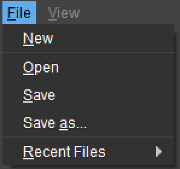
File menu options
Save the behavior tree in the Scripts/AI/BehaviorTrees folder of the project (GameSDK) directory and give it a name of choice; if the folder path doesn't already exist, please create it within the project directory.
For created behavior trees to show up within Sandbox, it is important to save them in the Scripts/AI/BehaviorTrees folder at all times.
Enabling CRYENGINE Events
Recall that the behavior tree uses the OnAttentionTarget event to keep track of when the player/target is sighted by the AI. Since this event is an in-built CRYENGINE event, activate it by ticking the View → Built-in Events → Enable CryEngine Events option from the Behavior Tree Editor's main menu.
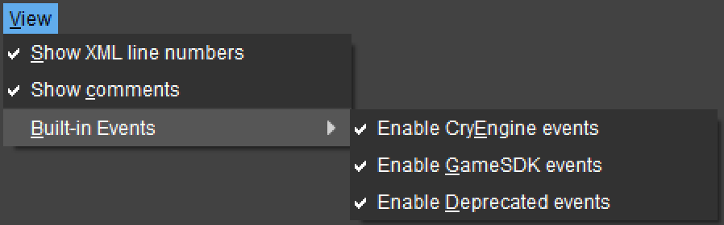
Enable CryEngine events
Doing so updates the Events section of the Behavior Tree Editor's window to list all available CryEngine events. Since the designed behavior tree doesn't make use of custom Variables, Game Events, Event handles or Timestamps, these sections of the Behavior Tree Editor are left blank for the tutorial.
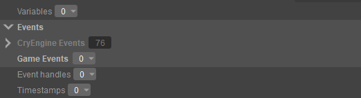
CryEngine Events enabled
Adding Nodes
As per the behavior tree's design, the Root calls a Flow → Sequence node that has a Wait for Event and Loop node as its children. This Sequence node is responsible for:
- Moving the AI agent when the player/target is sighted,
- Playing an animation if the sighted player/target is unreachable.
To add the Sequence node under the tree Root, click the [Node] dropdown and select the Sequence node from the Flow menu item. To add a child to this Sequence node, click the numbered dropdown beside it and click the Insert/Add option as shown below.
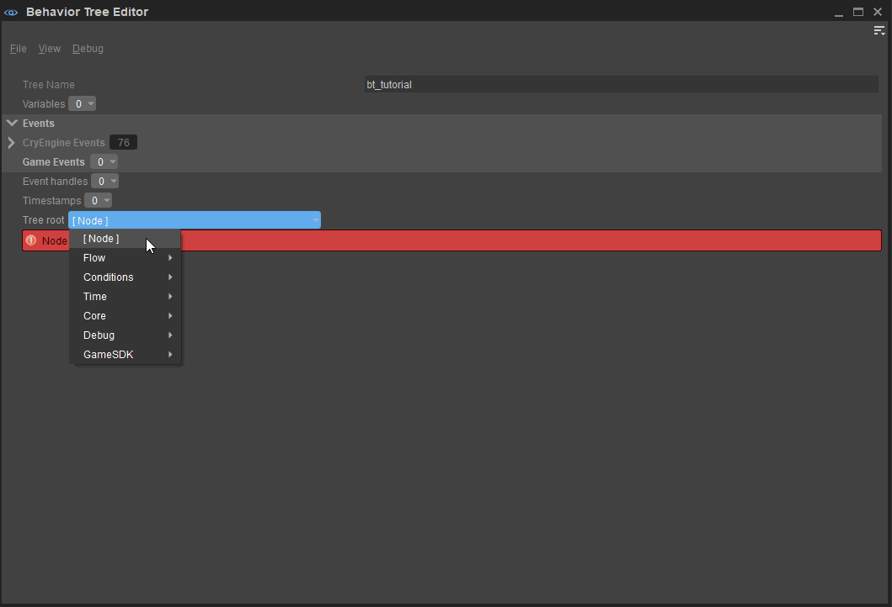
Sequence node
Since the Sequence node must wait for the OnAttentionTarget event before executing its Move or Animate children nodes,
- Add a Time → Wait for Event node as the Sequence node's first child. This lists the Wait for Event node under the Sequence node, with a dropdown that lets users pick the Event the node must wait for.
- Click the Event dropdown and select the OnNewAttentionTarget Event from the popup window.
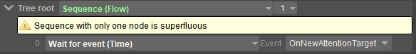
OnNewAttentionTarget
Similarly, add a Flow → Loop node as the Sequence node's second child and leave its Repeat Count parameter as 0. Since this Loop node is responsible for repeatedly executing a Flow → Selector node and its children, add a Selector node to the behavior tree as depicted below:
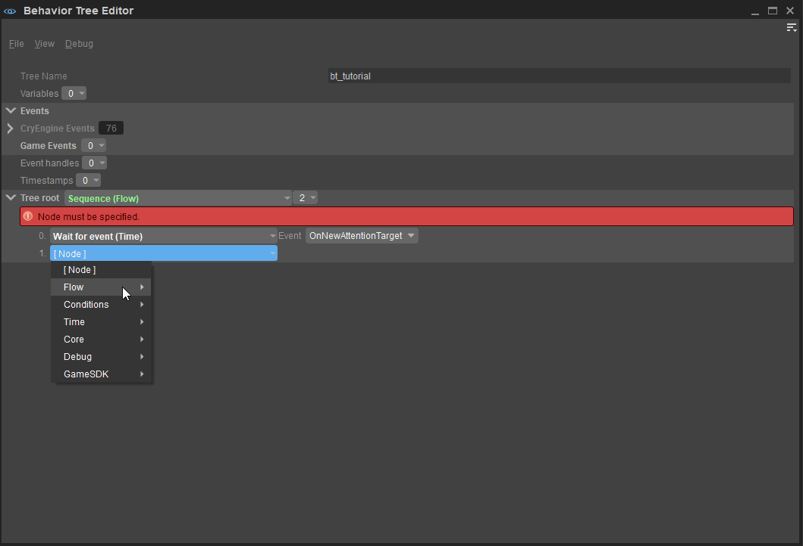
Loop node
Lastly, declare a Move node and an Animate node as the Loop node's children, which in turn will be responsible for moving the AI agent towards the target and playing the specified animation respectively. The final structure of the tree's nodes is depicted in the image below; don't forget to save it by selecting File → Save from the Behavior Editor Tool's main menu.
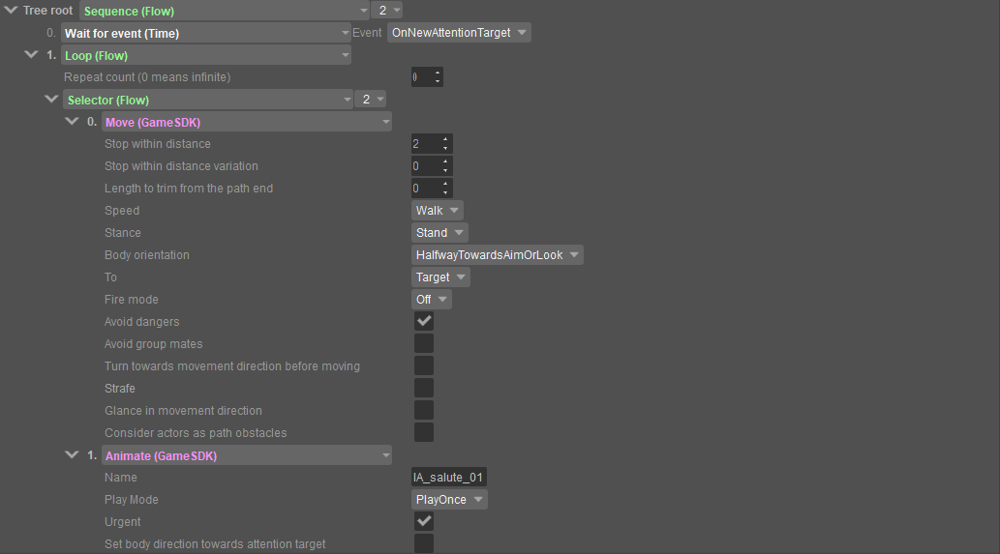
Final behavior tree
As described in the previous section of this tutorial, the Name field of the Animate node must include a FragmentID which points to the required animation.
In this case, IA_salute_01 references a salute animation for the AI Human character included in GameSDK.
To preview and experiment with other GameSDK animations, load the sdk_humanpreview.xml preview setup in the Mannequin Fragment Browser using the File → Load Preview Setup... option of its main menu.
Scroll through the Fragment List to view all available animations.
Level Design
Time to test the behavior tree.
Adding Obstacles
The first step towards doing so is to set up a level with obstacles; either use the Create Object tool to add existing GameSDK assets to the level, or import custom-designed ones via the Asset Browser. This tutorial makes use of the Airfield multiplayer level and assets included in the GameSDK sample project.
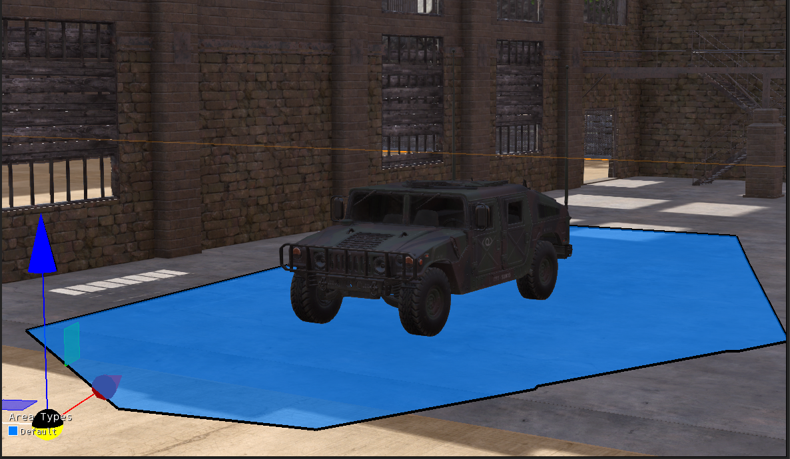
Airfield
Adding a Navmesh and AI Character
Before adding an AI agent to which the created behavior tree is to be associated, it is important to design a NavMesh. A NavMesh defines the area within which the AI is free to navigate.
To add a NavMesh:
- Select the AI → Navigation Area item from the Create Object tool.
- Click upon specific points within the created level/terrain to draw the desired NavMesh; double-click at any time to complete the drawing process.
- Select the Game → AI → Debug Navigation Agent Type → Visualize MediumSizedCharacters to see the created NavMesh.
If you're unable to see the created NavMesh, try selecting the Regenerate Navigation → Regenerate All Layers option from Sandbox's Game → AI menu to refresh/update the NavMesh.
In the Airfield image above, the NavMesh created around the parked vehicle is highlighted in blue. The next step is to add an AI character to navigate within this mesh; go ahead and use the default AI Human Character included with GameSDK, by selecting the Legacy Entities → AI → Characters → Human option of the Create Object tool.
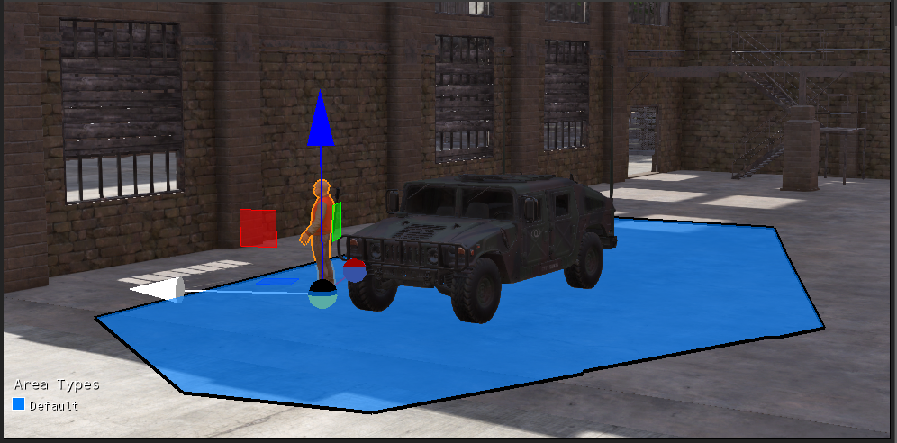
AI Human
The AI Character is seen added to the created NavMesh in the image above.
Connecting the Behavior Tree
Selecting the AI Character lists all its properties in the Properties tool.
With the Character selected, scroll down to the Lua Properties section of the Properties Tool to locate the Modular Behavior Tree field. This field contains a dropdown of all behavior trees available to that character; select the created behavior tree from the dropdown menu.
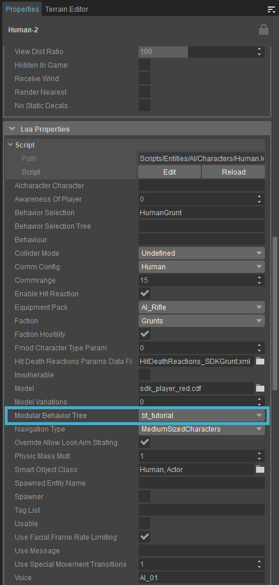
Modular Behavior Tree
If you cannot find the created behavior tree listed in the dropdown menu:
- Ensure that the behavior tree has been saved in the Scripts/AI/BehaviorTrees folder of the project's directory.
- Select the Reload Scripts → Reload All Scripts option from its Debug menu.
- Restart Sandbox.
Testing and Debugging
Jump into Game Mode (Ctrl + G) to test the level.
If set up correctly, the AI character should move towards the player when the player is situated within its defined Navmesh. As soon as the player leaves the Navmesh, the character will perform the animation called by the IA_salute_01 fragment declared in the behavior tree's Move node.
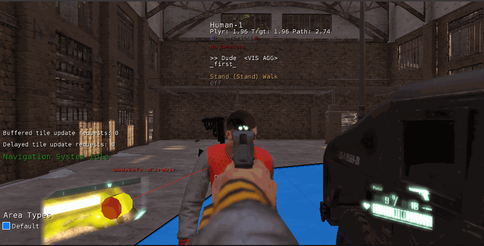
Behavior tree in action
To view the Navmesh in game mode as in the GIF above:
- Set the value of the ai_DebugDraw CVar to 1 in the Console to activate AI debugging view.
- Then set the value of ai_DebugDrawNavigation to any value between 1-6 to generate meshes in AI debugging view.
To view the entire sequence of the behavior tree's execution during run time, for debugging or otherwise,
- Enable the Debug → Show Tree option in the Behavior Tree Editor's main menu,
- Jump into game mode (Ctrl + G) within Sandbox,
- Press the forward-slash key (/) when looking at the AI agent; this displays information related to the behavior tree's active branch at the top-left corner of the screen, in textual format, as shown in the image below:
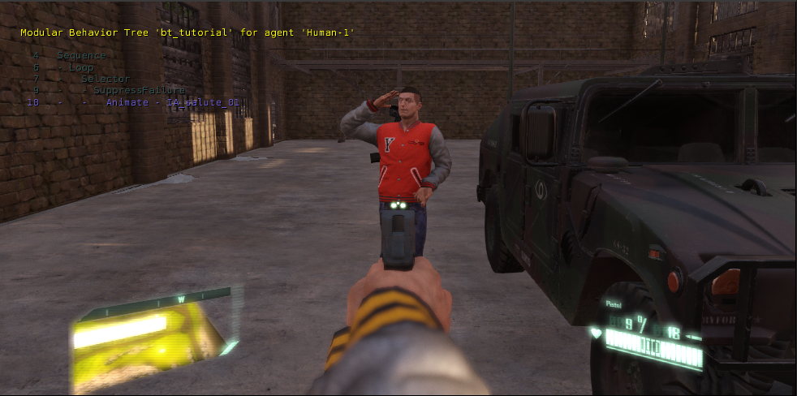
Debugging
This concludes the introduction to the Behavior Tree Editor. For a more in-depth look at the Editor's elements, default nodes and instructions on setting up custom nodes, please refer to the Behavior Tree Editor's user documentation.